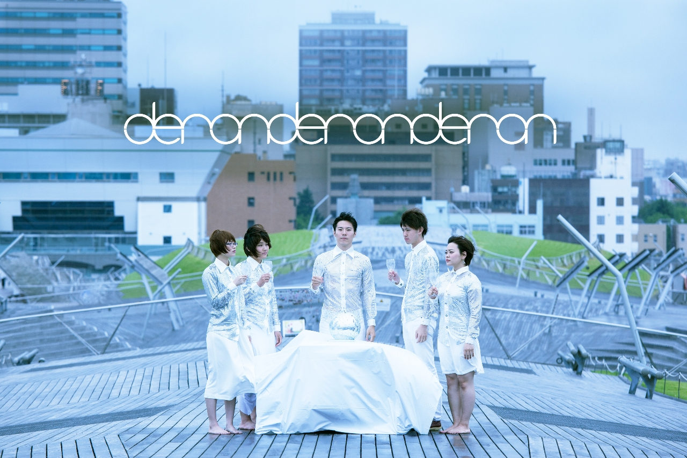

(左から)
Ba. マチルダちえこ
Dr. 森本のぞみ
Vo&Gt&Syn. さわいかん
Gt＆cho. ばっしー
Syn＆cho. 木越アイ
Vo.さわいかんを中心に横浜で結成された平均年齢 21 歳の ダンス・ロックバンド。
思考停止状態である現代人の頭を赤信号から青信号にするべく、
DANCE ROCKに大さじ2杯の毒をかけたサウンドにのせて、
独自の感覚と思考を吐き出す。
2014年1月：MASH A&Rの1月度優秀アーティストにwall off”にて選出。
2014年3月：1stフルアルバム”deronderonderon”をリリース。リリースに伴い、東名阪、横浜にてリリースツアーを行う。
2014年4月：COMIN’ KOBE 14一般選考枠にて最終選考選出。
2014年8月：RO69JACK 14にて優勝アーティストに選出。ROCK IN JAPAN FES 2014に出場。
photo: Jun Okazaki
decoration: lisa muramatsu